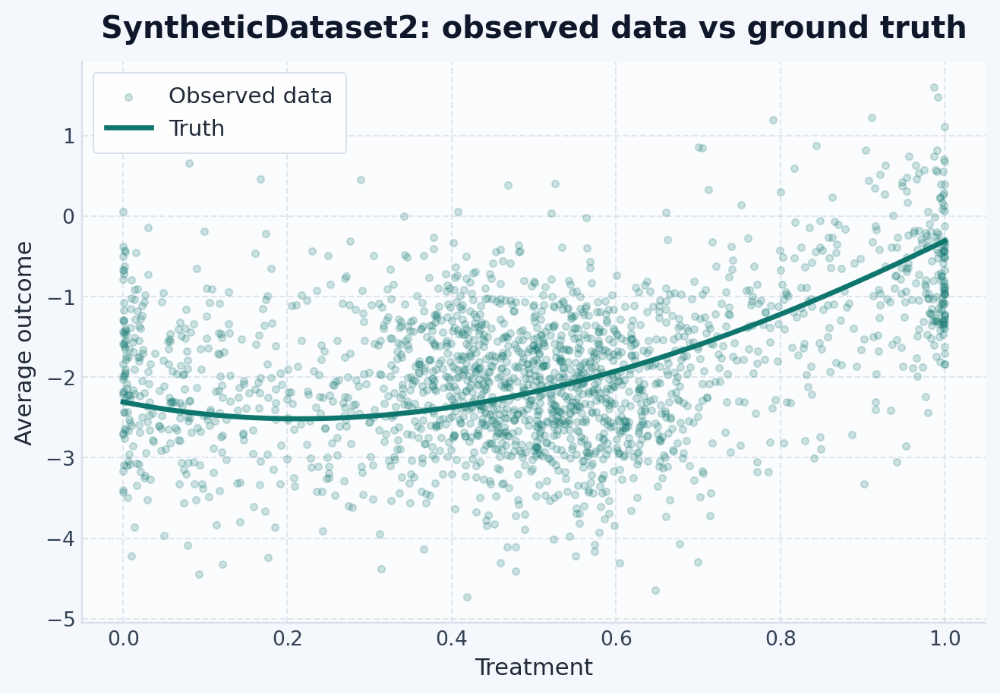
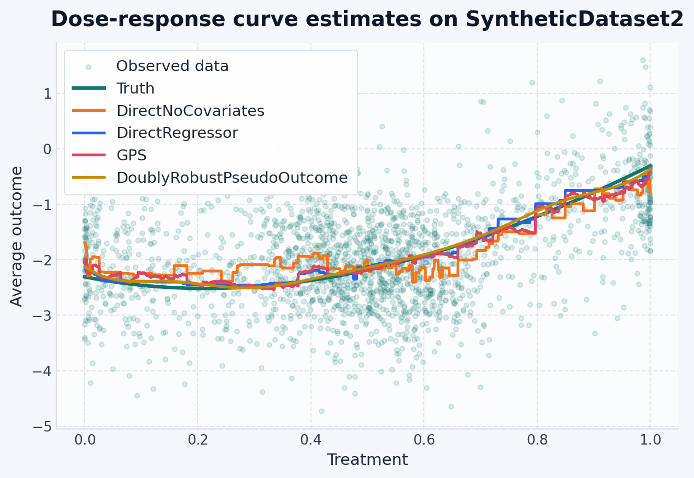
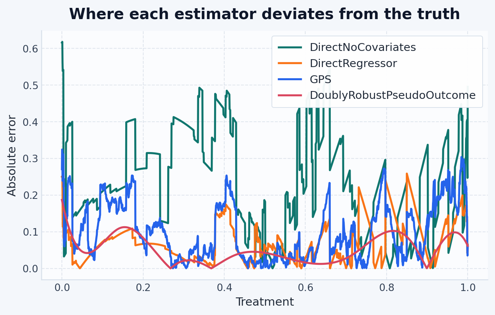

graph LR
D["SyntheticDataset2\nconfounded, nonlinear"] --> E1["1. DirectNoCovariates\nbaseline: ignores X"]
D --> E2["2. DirectRegressor\noutcome model with X"]
D --> E3["3. GPS\nscore-adjusted outcome model"]
D --> E4["4. DoublyRobustPseudoOutcome\ncombines both"]
E1 & E2 & E3 & E4 --> C["Compare to true curve"]
Use this page when you want one full benchmark-style example with a known dose-response curve.
NoteWhen To Use This Guide
SyntheticDataset2 is useful when you want to understand the skcausal workflow end to end before moving to real data. The treatment is continuous, the observed data are confounded, and the true response curve is available from the data-generating process.
Overview
This walkthrough fits four estimators on the same confounded dataset and compares their dose-response curves to the known truth.
The baseline (DirectNoCovariates) intentionally ignores confounding — it shows how much bias is introduced when X is omitted. Each subsequent estimator adds more structure to correct for it.
Step 1: Import dependencies
import numpy as np
import polars as pl
import matplotlib.pyplot as plt
from sklearn.compose import ColumnTransformer
from sklearn.ensemble import HistGradientBoostingRegressor, RandomForestClassifier
from sklearn.linear_model import LinearRegression
from sklearn.pipeline import make_pipeline
from sklearn.preprocessing import SplineTransformer
from skcausal.causal_estimators import (
DirectNoCovariates,
DirectRegressor,
DoublyRobustPseudoOutcome,
GPS,
)
from skcausal.datasets import SyntheticDataset2
from skcausal.density.permutation_weighting import PermutationWeighting
from skcausal.plotting import use_theme
use_theme(){'figure.facecolor': '#F4F7FB',
'figure.figsize': (8.0, 4.8),
'savefig.facecolor': '#F4F7FB',
'axes.facecolor': '#FBFCFE',
'axes.edgecolor': '#D7E0EA',
'axes.linewidth': 0.9,
'axes.grid': True,
'axes.axisbelow': True,
'axes.spines.top': False,
'axes.spines.right': False,
'axes.titlecolor': '#0F172A',
'axes.titlesize': 15,
'axes.titleweight': 'bold',
'axes.titlepad': 12.0,
'axes.labelcolor': '#1F2937',
'axes.labelsize': 11.5,
'axes.prop_cycle': cycler('color', ['#0F766E', '#F97316', '#2563EB', '#D9465F', '#CA8A04', '#16A34A']),
'grid.color': '#CBD5E1',
'grid.alpha': 0.55,
'grid.linewidth': 0.8,
'grid.linestyle': '--',
'legend.frameon': True,
'legend.framealpha': 0.95,
'legend.facecolor': '#FFFFFF',
'legend.edgecolor': '#D7E0EA',
'legend.fancybox': True,
'legend.borderpad': 0.6,
'font.size': 11.0,
'font.family': 'sans-serif',
'font.sans-serif': ['Avenir Next',
'Avenir',
'Helvetica Neue',
'Arial',
'DejaVu Sans'],
'text.color': '#1F2937',
'xtick.color': '#334155',
'ytick.color': '#334155',
'xtick.labelsize': 10,
'ytick.labelsize': 10,
'xtick.major.size': 0,
'ytick.major.size': 0,
'lines.linewidth': 2.4,
'lines.markersize': 6.5,
'patch.linewidth': 0.75,
'patch.edgecolor': '#FFFFFF',
'errorbar.capsize': 3.0,
'axes.formatter.use_mathtext': True}Step 2: Define spline regression helpers
The doubly robust estimator needs flexible regressors to capture SyntheticDataset2’s nonlinear response. These helpers build sklearn pipelines that expand the treatment column into spline basis functions:
def make_joint_spline_regressor(treatment_column: str):
# Spline-expand T; pass X through unchanged
preprocessor = ColumnTransformer(
transformers=[
("t_spline", SplineTransformer(n_knots=8, degree=3, include_bias=False), [treatment_column])
],
remainder="passthrough",
verbose_feature_names_out=False,
)
return make_pipeline(preprocessor, LinearRegression())def make_treatment_spline_regressor(treatment_column: str):
# Spline-expand T only; drop X entirely
preprocessor = ColumnTransformer(
transformers=[
("t_spline", SplineTransformer(n_knots=8, degree=3, include_bias=False), [treatment_column])
],
remainder="drop",
verbose_feature_names_out=False,
)
return make_pipeline(preprocessor, LinearRegression())
Tip
Why splines? A linear model assumes the dose-response is a straight line. Spline expansion gives the regressor a flexible basis to capture curves and plateaus without a fully nonparametric model.
make_joint_spline_regressor: expands \(T\) into splines and keeps \(X\) — used wherever both covariates and treatment matter.make_treatment_spline_regressor: expands only \(T\) and drops \(X\) — used for the final pseudo-outcome smoother in doubly robust, which conditions only on \(T\).
Step 3: Load the data and build the evaluation grid
dataset = SyntheticDataset2(n=2000, n_features=6, random_state=0)
X, t, y = dataset.retrieve()
X = X.rename({col: f"x{i}" for i, col in enumerate(X.columns)})
y = y.rename({y.columns[0]: "y"})
grid = dataset.get_grid(X.height)
true_curve = np.asarray(dataset.predict(X, grid), dtype=float).reshape(-1)
grid_values = grid["t_0"].to_numpy()
pl.concat([X.head(5), t.head(5), y.head(5)], how="horizontal")
shape: (5, 8)
| x0 | x1 | x2 | x3 | x4 | x5 | t_0 | y |
|---|---|---|---|---|---|---|---|
| f64 | f64 | f64 | f64 | f64 | f64 | f64 | f64 |
| 1.304 | 0.947081 | -0.703735 | -1.265421 | -0.623274 | 0.041326 | 0.463393 | -3.312002 |
| -2.325031 | -0.218792 | -1.245911 | -0.732267 | -0.544259 | -0.3163 | 0.29262 | -1.958108 |
| 0.411631 | 1.042513 | -0.128535 | 1.366463 | -0.665195 | 0.35151 | 0.663803 | -1.829244 |
| 0.90347 | 0.094012 | -0.743499 | -0.921725 | -0.457726 | 0.220195 | 0.530812 | -2.43135 |
| -1.009618 | -0.209176 | -0.159225 | 0.540846 | 0.214659 | 0.355373 | 0.00191 | -2.635592 |
dataset.get_grid returns a treatment table spanning the observed range at X.height evenly spaced points — matching the predict API’s row-count requirement.
Step 4: Inspect the raw data
Before fitting, plot the observed data against the true curve to see how much confounding is present:
fig, ax = plt.subplots(figsize=(8, 5))
ax.scatter(t["t_0"].to_numpy(), y["y"].to_numpy(), s=12, alpha=0.2, label="Observed data")
ax.plot(grid_values, true_curve, linewidth=2.5, label="Truth")
ax.set_xlabel("Treatment")
ax.set_ylabel("Average outcome")
ax.set_title("SyntheticDataset2: observed data vs ground truth")
ax.legend()
plt.show()
If the raw data cloud already tracks the truth, confounding is mild. A visible gap indicates that estimators ignoring X will be systematically biased.
Estimators
1. Baseline: ignore covariates
DirectNoCovariates fits \(E[Y \mid T]\) without including X. This is the naive estimator — useful only as a baseline to measure the cost of ignoring confounding:
naive = DirectNoCovariates(
outcome_regressor=HistGradientBoostingRegressor(
random_state=0, max_depth=3, max_iter=120,
)
)
_ = naive.fit(X, t, y)
naive_curve = np.asarray(naive.predict(X, grid), dtype=float).reshape(-1)
Warning
This estimator is intentionally biased. Do not use it for causal inference on real data — it is here only to quantify the cost of ignoring confounding.
2. Outcome regression with covariates
DirectRegressor models the outcome as a function of both X and T. Including X removes the portion of outcome variation explained by covariates:
direct = DirectRegressor(
outcome_regressor=HistGradientBoostingRegressor(
random_state=0, max_depth=4, max_iter=160,
)
)
_ = direct.fit(X, t, y)
direct_curve = np.asarray(direct.predict(X, grid), dtype=float).reshape(-1)This is a strong baseline when the outcome model is correctly specified. In this walkthrough it ends up as the best-performing estimator.
3. Generalized propensity score (GPS)
GPS takes an alternative route: it first estimates a treatment score from predict_density(X, T) and then fits an outcome model on that score together with the treatment value. In this walkthrough, PermutationWeighting supplies the score, so the outcome model is adjusted using a stabilized density-ratio estimate rather than a normalized conditional density.
gps_density = PermutationWeighting(
classifier=RandomForestClassifier(
n_estimators=200, min_samples_leaf=5, random_state=0,
),
treatment_transformation="spline",
max_trials=3,
random_state=0,
)
gps = GPS(
density_regressor=gps_density,
outcome_regressor=HistGradientBoostingRegressor(
random_state=0, max_depth=3, max_iter=120,
),
cv=3,
random_state=0,
)
_ = gps.fit(X, t, y)
gps_curve = np.asarray(gps.predict(X, grid), dtype=float).reshape(-1)4. Doubly robust pseudo-outcome
DoublyRobustPseudoOutcome combines an outcome model and a treatment-density model. Under the method’s identification and nuisance-model assumptions, the pseudo-outcome construction can remain consistent if either nuisance component is correctly specified. Spline regressors keep the fitted curve smooth:
dr_density = PermutationWeighting(
classifier=RandomForestClassifier(
n_estimators=200,
min_samples_leaf=5,
random_state=0,
),
treatment_transformation="spline",
max_trials=3,
random_state=0,
)
dr_outcome_regressor = make_joint_spline_regressor(t.columns[0])
dr_pseudo_outcome_regressor = make_treatment_spline_regressor(t.columns[0])
dr = DoublyRobustPseudoOutcome(
density_estimator=dr_density,
outcome_regressor=dr_outcome_regressor,
pseudo_outcome_regressor=dr_pseudo_outcome_regressor,
random_state=0,
)
_ = dr.fit(X, t, y)
dr_curve = np.asarray(dr.predict(X, grid), dtype=float).reshape(-1)Final comparison chart
fig, ax = plt.subplots(figsize=(8, 5))
ax.scatter(t["t_0"].to_numpy(), y["y"].to_numpy(), s=12, alpha=0.15, label="Observed data")
ax.plot(grid_values, true_curve, linewidth=2.5, label="Truth")
ax.plot(grid_values, naive_curve, linewidth=2, label="DirectNoCovariates")
ax.plot(grid_values, direct_curve, linewidth=2, label="DirectRegressor")
ax.plot(grid_values, gps_curve, linewidth=2, label="GPS")
ax.plot(grid_values, dr_curve, linewidth=2, label="DoublyRobustPseudoOutcome")
ax.set_xlabel("Treatment")
ax.set_ylabel("Average outcome")
ax.set_title("Dose-response curve estimates on SyntheticDataset2")
ax.legend()
plt.show()
Error profile by treatment value
The final chart shows the curves directly. The next plot turns that same comparison into absolute error, which makes it easier to see where each estimator fails along the treatment range.
fig, ax = plt.subplots(figsize=(8, 4.5))
ax.plot(grid_values, np.abs(naive_curve - true_curve), linewidth=2, label="DirectNoCovariates")
ax.plot(grid_values, np.abs(direct_curve - true_curve), linewidth=2, label="DirectRegressor")
ax.plot(grid_values, np.abs(gps_curve - true_curve), linewidth=2, label="GPS")
ax.plot(grid_values, np.abs(dr_curve - true_curve), linewidth=2, label="DoublyRobustPseudoOutcome")
ax.set_xlabel("Treatment")
ax.set_ylabel("Absolute error")
ax.set_title("Where each estimator deviates from the truth")
ax.legend()
plt.show()
Error table
pl.DataFrame(
{
"estimator": [
"DirectNoCovariates",
"DirectRegressor",
"GPS",
"DoublyRobustPseudoOutcome",
],
"mean_absolute_error": [
float(np.mean(np.abs(naive_curve - true_curve))),
float(np.mean(np.abs(direct_curve - true_curve))),
float(np.mean(np.abs(gps_curve - true_curve))),
float(np.mean(np.abs(dr_curve - true_curve))),
],
}
).sort("mean_absolute_error")
shape: (4, 2)
| estimator | mean_absolute_error |
|---|---|
| str | f64 |
| "DoublyRobustPseudoOutcome" | 0.050969 |
| "DirectRegressor" | 0.072385 |
| "GPS" | 0.100341 |
| "DirectNoCovariates" | 0.235799 |
The table makes the bias from ignoring covariates visible: DirectNoCovariates has the highest MAE. In this run, DirectRegressor has the lowest MAE, which suggests the flexible outcome model matches this dataset well. On real problems with model misspecification, GPS and doubly robust can offer useful protection.
Tip
When DirectRegressor and DoublyRobustPseudoOutcome agree closely, that is a useful diagnostic that the outcome model may already be capturing most of the structure in the data. When they diverge, the doubly robust estimate can be more resistant to nuisance-model misspecification because, in theory, only one of the two nuisance components needs to be correct.
What to try next
If you want the shortest continuous-treatment example, go to the continuous treatments guide.
If your treatment is boolean or multi-level instead of numeric, return to the examples hub.